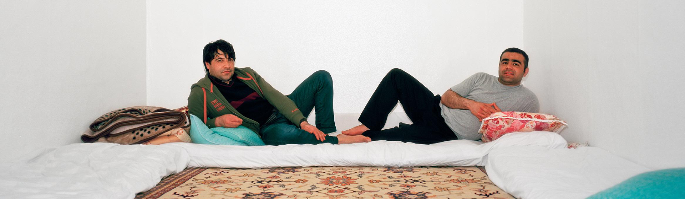

도시를 탐사하는 세계 관찰자
윤병주

윤병주
윤병주는 카메라를 통해 세계를 관찰한다. 사진을 전공한 그는 현실과 대면하기 위해 카메라 셔터를 누른다. 때문에 그의 카메라 앵글에는 간혹 그가 서있는 지점에서 바라본 세계의 모습이 민낯처럼 숨김없이 포착되곤 한다. 이미 사진을 배우기 전부터 그는, 자신이 목격한 또 다른 현실의 풍경을 어떻게 타인들과 공유할 수 있을지 생각해왔다. 사진은 그것을 할 수 있지는 않을까. 그는 뒤늦게 사진을 배우면서 스스로에게 던진 질문에 대한 해답을 찾아가고 있다. 그에 따르면, 사진의 힘이란 프레임 안에 포착된 이미지들로 그 주변의 누락된 수많은 상황들까지 상상해 볼 수 있다는 것인데, 그것은 윤병주가 세계를 관찰하는 태도와 비슷하다. 플라톤이 ‘동굴의 우화(The allegory of the cave)’로 설명했던 것처럼 세계는 마치 캄캄한 동굴 벽에 비친 그림자와 같다. 그렇다면 우리가 세계를 지각한다는 것은 동굴이라는 감옥에 갇혀 그림자놀이를 하고 있다는 말이 된다. 그런 관점에서 윤병주는 편협하고 일방적인 바라보기의 태도를 과감히 포기한다. 예컨대, 그는 이태원 우사단길에서 이슬람 사원을 중심으로 거주하고 있는 무슬림들을 만나 그들의 모습을 사진으로 남겼다. 사진에 드러난 작가의 시각은 무슬림에 대한 전형적 수사와 문화적 코드를 애써 반복하지 않는다. 오히려 그는 이질적인 것들 속에서 간간이 비치는 익숙한 것들, 아니면 현실과 동떨어져 있는 듯하면서 어느새 현실에 동화된 삶의 구체적인 장면들에 주목한다. 윤병주의 [다웃과 잠실(Daud & Zamsil)]을 보면, 그는 이미 우리가 오래전부터 틀 지워왔던 ‘거기(there)’라는 관념적인 장소에 방문해 지금 ‘여기(here)’라는 현실 세계의 이면을 발굴하여 이내 ‘다르게 보기’를 재촉한다. 세계를 보는 방식에 답은 없다. ‘세계를 보는 시각이 가능하면 많아야 한다’라는 카자 실버만(Kaja Silverman)의 말처럼, 집단 안에서 세계를 바라보는 개인들의 특수한 시각을 인정할 때 비로소 세계에 대한 인식의 폭은 그만큼 확장될 것이다.
화성(華城) 탐사
나에게 경기도 화성은 ‘연쇄살인’의 기억으로 남아 있다. 어딘가 음산하고, 휑한 동네. 윤병주는 그런 화성을 ‘화성(華城) 탐사’라는 작업을 통해서 우주에 있는 화성을 연상하게 만들었다. 화성탐사선이 화성의 표면을 찍어서 지구에 전송했듯이, 화성 지역의 공사장 바닥을 탐험하는 탐사선의 시선. 구구절절 설명하지 않는다면 화성이라는 별의 표면이라 해도 믿을 정도로 영상과 사진은 흥미진진하다. 작업 속의 화성이 그 화성이라는 것을 알게 되는 순간 헛웃음이 나면서 동시에 생각이 복잡해진다. 연쇄살인, 별, 도시개발. 전혀 별개일 것만 같던 것들이 실타래처럼 꿰어지면서 그저 웃어넘길 수만은 없게 만들기 때문이다. 농담처럼 진담처럼, 때론 말장난처럼 하지만 그저 장난만은 아닌 이방인의 시선. 윤병주 작업이 가지고 있는 이런 특징은 모순덩어리 세상에 끊임없이 관심을 두고 있지만, 철저하게 그 안에 들어가서 바라보는 시선이 아닌, 한 발짝 거리두기를 하고 바라보는 시선. 이런 시선이 있기에 치열하고 상처 많은 현실을 보면서도 웃음 짓게 할 수 있는지도 모른다. 그냥 웃음이 아닌 쓴웃음. 그리고 다시 현실을 돌아보게 한다. 누군가는 선배 작가들처럼 문제적 현실에 심각하게 (감정적으로) 개입하지 않고 장난하듯 접근한다고 질책할지도 모르겠다. 하지만, 너무 심각하게 접근하다 쉽게 다치고 지치는 것보다, 조금 가볍게 보일지라도 지속할 수 있는 힘이 더 필요한 건 아닐까. 그리고 그런 모습이 지금 젊은 작가들이 바라보는 좀 더 솔직한 태도는 아닐까 생각해본다.